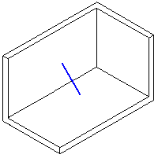
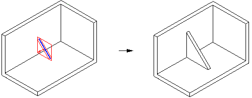
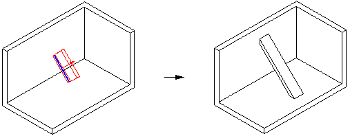

Examples: Defining the Rib Direction
The following figures show how this profile can extend to form a rib in two different ways.

Use the rib command dynamics to see which direction the rib extends. If you click when the direction arrow displays within the plane of the profile, as shown next, the Thickness value you type in the command bar box applies in that direction.

To apply the Thickness value in the other direction, click when the direction arrow displays perpendicular to the plane of the profile, as shown next.

Use the command bar options to define the rib depth, which apply perpendicular to the direction you defined for the thickness.